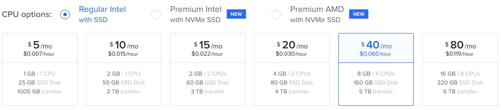
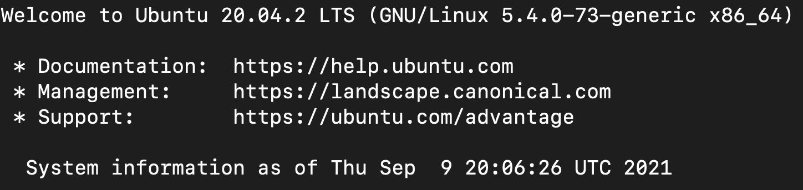
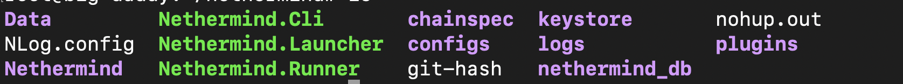
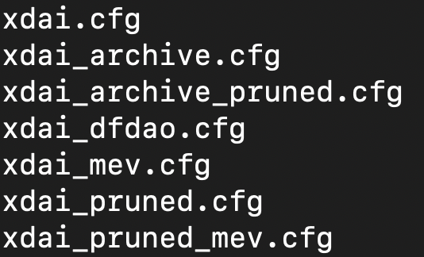
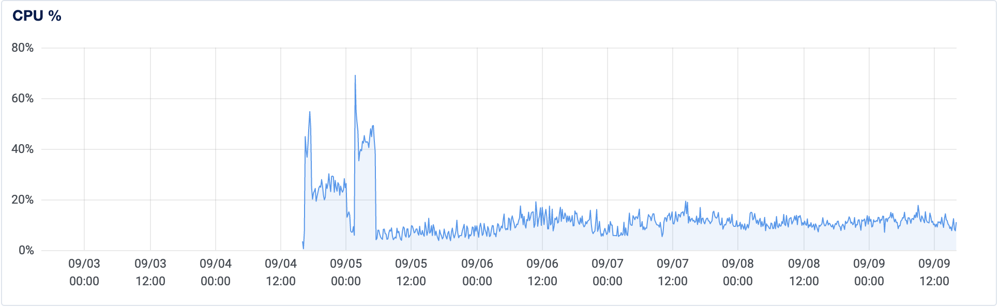
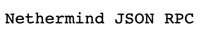
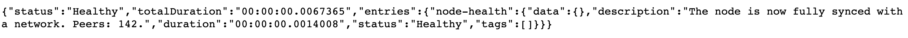

How to run your own xDai Node on Digital Ocean
Why run your own xDai Node?
- No queue of other people's transactions
- No downtime. Thousands of other players are attempting to use the same free rpc endpoint as you otherwise!
- Faster access. The memory and cpu speed of the free rpc is not published. By running your own node you can use a beefier box.
The clients that have known xDai support include OpenEthereum (formerly Parity) and Nethermind.
Why Nethermind
from xDai docs
A majority of xDai validators are now running the Nethermind client. The latest version includes support for MEV via flashbots and increased default xDAI TxPool size from 1024 transactions to 2048.
Why Digital Ocean for hosting
from Nethermind docs
Generally the faster IO operations the better. For this reason Digital Ocean and UpCloud are so far the best cloud providers we have tested when running Nethermind nodes.
1. Setting up a Digital Ocean Instance
Buy a droplet (cloud computer). I recommend a machine with at least the following specs ($40/month):
Ubuntu 20.4 / 8 GB / 4 CPUs 160 GB SSD Disk 5 TB transfer- If this too slow, I synced a node in ~6 hours with the $80/month option
If your sync is very slow (extended beyond two days) then very likely your setup cannot catch up with the chain progress.
- 
Remotely connect to the Droplet using ssh. Probably something like
ssh root@157.245.5.42- You should see the following on success:
- 
2. Install Nethermind and dependencies
Note: these commands are verbatim from here
wget [NETHERMIND_URL]- use the most recent linux amd64 release from downloads) Probably something likewget https://nethdev.blob.core.windows.net/builds/nethermind-linux-amd64-1.11.3-fe90423.zipsudo apt-get update && sudo apt-get install libsnappy-dev libc6-dev libc6 unzip -y- Linux dependenciesunzip NETHERMIND_URL -d nethermind- unzip to nethermind folder
At this point, I diverged from the basic installation. This is because there are some specific configuration settings that are nice for running a node (and playing Dark Forest).
3. Configure Nethermind for Dark Forest
So in the nethermind folder you will see Nethermind.Launcher and Nethermind.Runner.
- 
From ethhub
Nethermind.Launcher is an interactive prompt that allows you to choose the network which then calls Nethermind.Runner with the appropriate config file. This is the quickest way to get up and running. Nethermind.Runner is the actual client binary similar to the geth binary and supports both cli options or a JSON configuration file.
Nethermind.Runner --config <path_to_config>
I added some custom configurations, so I choose to use the Nethermind.Runner binary with my custom config file.
cd nethermind- We want to sync an xDai node, so here are the options for xDai (xdai_dfdao is my custom config):
- 
- I choose to copy
xdai_pruned_mev.cfgbecause:- I want the experiment with mev on xDai
- I want to save size by pruning, at the cost of historical queries:
pruning is the process of removing some of the intermediary state nodes - it saves some disk space but makes most of the historical state queries fail.
cp configs/CONFIG_FILE configs/YOUR_CONFIGNAME- for me, this was
cp configs/xdai_pruned_mev.cfg configs/xdai_dfdao.cfg
- for me, this was
Edit your config file with something like nano configs/xdai_dfdao.cfg and change the following fields to allow access to your node from the internet:
- Your JSON RPC should look like this:
"JsonRpc": { "Enabled": true, "Timeout": 20000, "Host": "IP ADDRESS", "Port": 8545, "WebSocketsPort": 8546, "EthModuleConcurrentInstances": 6 } - Under Network add a new field.
"Network": { ... "ActivePeersMaxCount": 256,if you have a good connection and a reasonable machine then setting --Network.MaxActiveSyncPeers to 256 (see NetworkConfig secion in configuration) should give much better fast sync times (we use 256 peers to get 5 hours syncs)
- Note that even though
ActivePeersMaxCountis deprecated, this setting worked for me (andMaxActiveSyncPeers) didn't.
- Note that even though
- Exit and save the file
4. Run Nethermind in background
So now we're ready to go.
However, if you run ./Nethermind.Runner --config <path-to-config-file> and logout, your process will stop.
To avoid this, you can use nohup and the & operator to run your process in the background.
nohup ./Nethermind.Runner --config <path-to-config-file> &- optional: If you want to enable Health Checks, run the following:
nohup ./Nethermind.Runner --config <path-to-config-file> --HealthChecks.Enabled true &
This command will create a new file nohup.out (name can be configured with nohup ... > output.txt) in the nethermind directory, with logs that you can inspect.
You can find the process id in order to stop the now backgrounded syncing process with ps:
root@ubuntu-s-4vcpu-8gb-nyc3-01:~/nethermind# ps
PID TTY TIME CMD
8083 pts/0 00:00:00 bash
13059 pts/0 00:07:10 Nethermind.Runn
13441 pts/0 00:00:00 ps
And kill it with ps PID like kill 13059
You can also check out the Digital Ocean Droplet Activity Dashboard, which should show a large increase in activity while syncing occurs.

- Go to
http://DIGITAL_OCEAN_IP:8545and you should see the following:- 
5. Inspect logs and check node's health
Logs are in two places: nohup.out (or whatever you name your output file) and nethermind/logs/xdai.logs.txt.
I inspected both sets of logs with the cat filename command
and once the file got too big tail -n 10 filename to view the newest entries.
Nethermind provides an excellent explanation of what the logs are telling you about the speed of your fast sync.
I suggest following along and learning about the logs.
Finally, once your node is synced or near synced, you can confirm your node is in good shape:
http://DIGITAL_OCEAN_IP:8545/health

Thanks for reading!
This guide was originally submitted by cha0sg0d11.